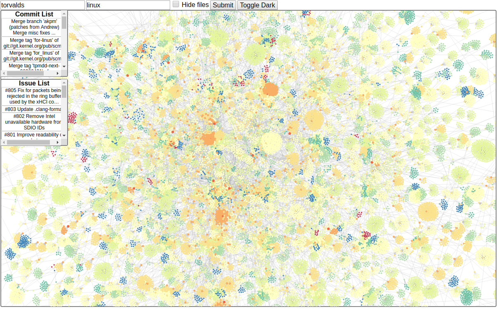

Who am I?
- Computer Science student at KTH
- Scout and musician
- Audio and lighting technician
Hello World!
For our bachelor thesis we developed a visualization tool that visualizes some GitHub data and metadata. The graph in the middle shows all repo files and directories as nodes with color and size varying depending on the distance from the root. The visualization can be dragged and scrolled and the nodes can also be dragged around. To the left there are two menus, one where you can go to different commits and see the file tree at that point in time and one where you can see different issues.

On encouragement from our supervisor we added dark mode because these are a must in modern websites.
As you can see on the image above the tool did not handle
Full-stack project for an internet programming course, developed together with @mansand1. The application was developed with Vue front-end using node backend featuring a nice ORM SQLite database. Users could log in and their passwords were salted and hashed and stored in the database together with their list information. The site also had a self-signed TLS certificate and was hosted on the local machine.
The user could log in and view their todo-lists, check any tasks completed ✅ and add and remove tasks and lists. The lists had a pretty and eye-catching green color and included nice big red ❌-buttons for removing lists and tasks. The same daily quote greeted the (would be) users every day!

This was a course project to learn more about embedded programming. The program was developed for a PIC32 microcontroller using an IO shield and some external buttons connected to hardware pins on the chip. As you can see on the tiny screen in the image above the player is presented with some dots running down the screen where the player must press the right combination of buttons and the strum button att the right time for them to score. On the screen above the player seems to have been a bit early in strumming as displayed on the screen.

The entire thing was packed in a flaming hot red case and gathered much interest in the project conference where students got to try out each others projects. The tiny screen was placed inside the little rectangular slot at the side of the guitar neck and there was also a speaker connected playing som terribly offbeat sine waves. Of course, no one could beat my high-score in the game.

Our first "major" (3 weeks) project in school at the end of first year. A chess game developed with GoLang using game library Ebiten. The players took turns to move their pieces to any legal square and the game ended with the capture of the opposing king. The rules castling, en passant and pawn promotion as well as check and checkmate were not implemented in the game, hence the "crappyness".